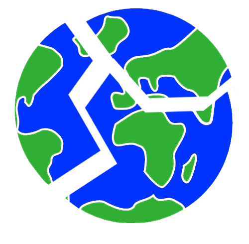
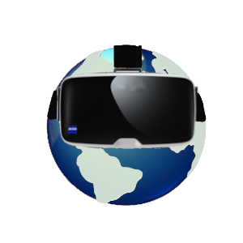
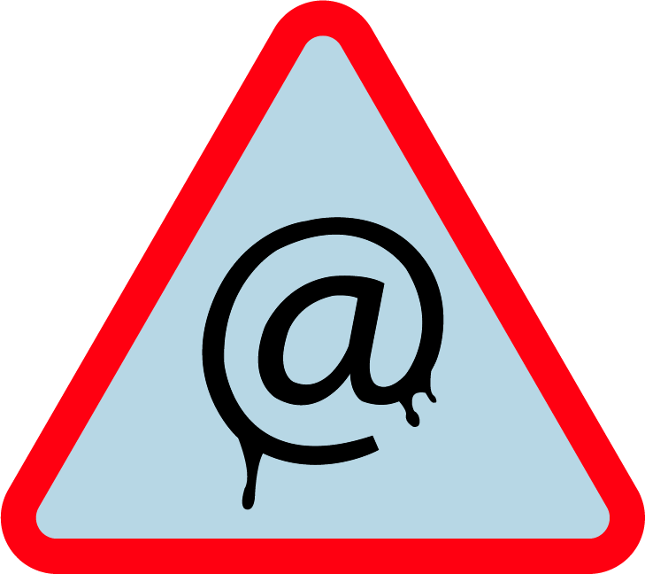

Autres projets
Vous trouverez ici les autres projets sur la polution numérique réalisés par les soins de mes camarades de classe
- 

- 
- 
- 

The dark side of pied papers
Réalisé par Maxime Malatier
Black world
Réalisé par Nicolas Gelin
E-LLUSION
Réalisé par Thomas Lambolez
VR : Une réalité pas si virtuelle
Réalisé par Raphaël Lemoine
Hiden
Réalisé par Thomas Jeu
Numérisk
Réalisé par Martin Liger
Terminateur Web
Réalisé par Julien Ferre